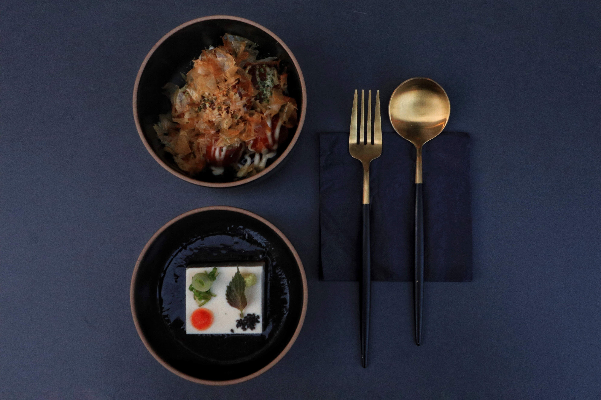
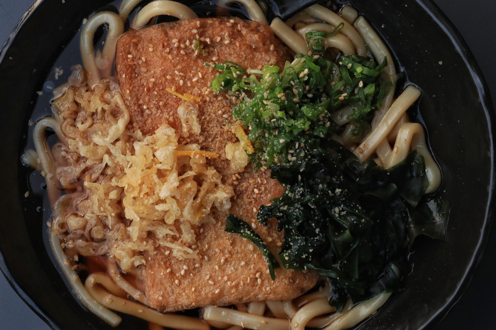
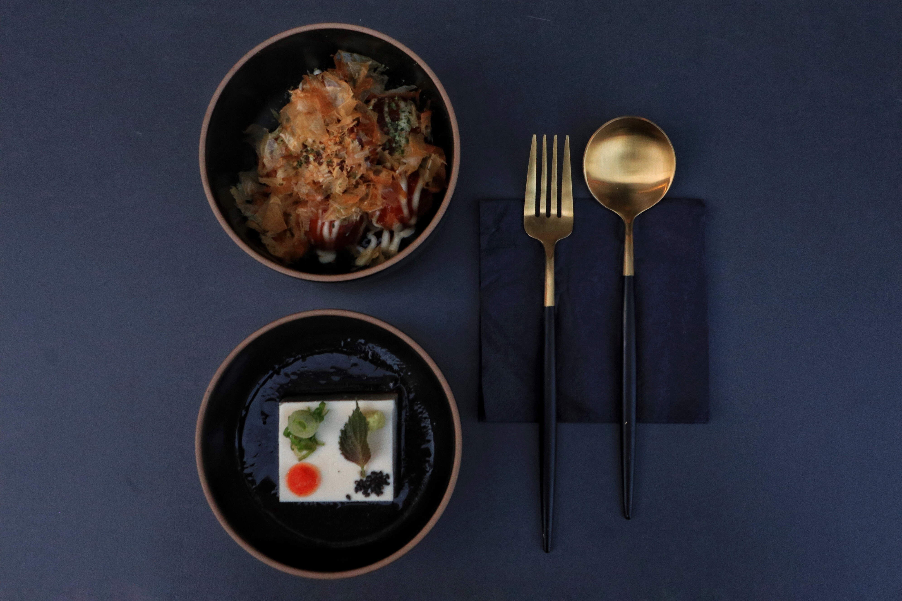
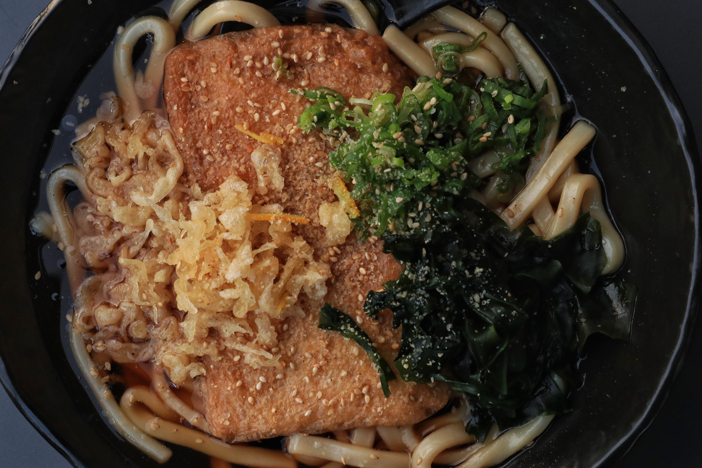

In Japan, there is a culture of "Sharing". People share tapas and enjoy a conversation over drinks that unites people on the table. JABE aims to establish and combine the flavors of traditional Japanese dine and bar with the dynamic trends of Berlin's food culture where locals and international people from all over the world can enjoy the moment.
Our mission is to deliver the amazingly rich heritage to diners and drinkers in the heat of Mitte on a level not yet experienced in Berlin. This is why the name JABE was created after Japan and Berlin.
| JAPANESE TIDBITS | |
| Gyoza w/ Meat or Vegan grilled & steamed dumpling | 4.5 |
| Edamame (vegan) Japanese soybeans w/ yukari | 3.9 |
| Japanese Straw Fries (vegan) w/ yukari shiso salt seasoning | 4.5 |
| Karaage Japanese fried chicken | 4.5 |
| Truffle Salad (vegan) w/ spinach, truffle & saikyo miso dressing | 5.5 |
| Jagaimo Salad Japanese potato salad | 3.9 |
| UDON NOODLES | |
| Kitsune Udon Soup (vegan) w/ Kitsune tofu, vegetables & herbs | 8.5 |
| Sesam Udon (cold) w/ minced pork, sesame chili sauce, pepper bell & spring onion | 8.3 |
| BOWLS | |
| Yakiniku Bowl Japanese beef bowl w/ sprout, car rot, daikon, cucumber, onsen egg, spinach & rice | 8.9 |
| Teriyaki Don Bowl Japanese chicken bowl w/ pepper bell, eggplant, spring onion & rice | 8.5 |
| Takahiro Sea Food Bowl salmon, octopus, fried prawn, avocado, cucumber-kimchi, salad, sesame & rice | 10.9 |
| Flamed Salmon Truffle Bowl flamed salmon, truffle, avocado, cucumber-kimchi, chili mayo sauce & rice | 12.9 |
| Okinawa Sea Food Bowl soy meat, avocado, onsen egg, taco, baby spinach, tomato salad & rice | 8.9 |
| Avocado Kimchi Bowl avocado, cucumber-kimchi , soy meat, tomato, roasted sesame, nori, soy ponzu & rice | 8.5 |
| Karaage Curry Bowl Japanese crispy chicken w/ Japanese curry sauce, vegetables & rice | 8.9 |
| JABE SPECIAL ROLLS | 8 pcs |
| Veggie Crispy Roll tempura roll w/ avocado, tomatosalad, tamago & rice | 7.5 |
| Vegan Hokkaido Roll pumpkin, cucumber-kimchi, edamame, avocado, miso sauce & teriyaki sauce | 7.5 |
| Spicy Tuna Roll spicy tuna w/ cucumber, chives, pepper & miso sauce | 8.9 |
| JABE Salmon Tatar Roll w/ avocado, cucumber, salmon tatar, lemon soy sauce & sesame sauce | 8.5 |
| Tokio Roll in a salmon coat w/ cucumber, sesame sauce & teriyaki sauce | 8.9 |
| Kyoto Roll crispy tuna roll w/ avocado, sesame, cocktail sauce & unagi sauce | 8.9 |
| NIGIRI | 2 pcs |
| Sake salmon | 3 |
| Maguro tuna | 4 |
| Hamachi yellowtail | 3.5 |
| Ebi shrimps | 3 |
| Tamago omelet | 3 |
| MAKI | 6 pcs |
| Kappa cucumber | 3.4 |
| Avocado avocado | 4 |
| Shinko radish | 4 |
| Campio dried gourd | 4 |
| Tekka tuna | 4.5 |
| Sake salmon | 4 |
| Hamachi yellowtail | 4 |
| Ebi shrmips | 4 |
| SUSHI SET | |
| Sushi Set Nigiri nigiri: 2 x sake, 2 x maguro, 1 x ebi 1 x yellowtail, 1 x tamago | 10.9 |
| Sushi Set Maki maki: 6 x kappa, 6 x avocado, 3 x tekka, 3 x sake | 8.5 |
| Sushi Set Maki Veggie maki: 6 x kappa, 6 x avocado, 3 x shinko, 3 x campio | 7.9 |
| Sashimi Moriawase sashimi: salmon, tuna, yellowtail, tamago & avocado | 13 |
| Sushi Set Mixed nigiri: 1 x sake, 1 x ebi, 1 x maguro maki: 6 x kappa, 6 x sake | 9.5 |
| Sushi Set JABE Salmon maki: 6 x sake maki nigiri: 2 x sake nigiri, 4 x sake tatar inside-out | 9.5 |
| SOUP & SALADS | |
| Miso Soup Japanese Miso Soup w/ wakame and vegetables | 3.9 |
| Jagaimo Salad (vegetarian) Japanese potato salad | 4.3 |
| Roast Beef Salad dry-aging beef w/ spinach & onion soy sauce | 12.9 |
| Truffle Salad (vegan) w/ spinach, truffle & saikyo miso dressing | 8 |
| Octopus Ceviche w/ Octopus, pepper bell, cucumber, olive, tomato, Wasabi sauce | 6.5 |
| KUSHI YAKI | |
| Torimomo 2 skewers of chicken | 5.9 |
| Salmon 1 skewers of salmon | 6.2 |
| Gyu 2 skewers of beef | 6.9 |
| Shiitake 2 skewers of shiitake | 3.9 |
| Uzura Tamago 3 skewers of quail eggs | 4.3 |
| Kisetsu Yasai 2 kinds of vegetable | 4.3 |
| JAPANESE TAPAS | |
| Edamame (vegan) Japanese soybeans w/ yukari | 3.9 |
| Ingen Goma-ae (vegan) green beans with sesame miso | 4.5 |
| Kinu Tofu (vegan) silken tofu, ginger, grated radish, sesame shiso, spring onions & ponzu sauce | 4.3 |
| Japanese Straw Fries (vegan) w/ yukari shiso salt seasoning | 4.5 |
| Gyoza Meat grilled & steamed dumplings w/ minced pork | 5.5 |
| Gyoza Vegan grilled & steamed dumplings w/ vegetables | 5.5 |
| Karaage Japanese fried chicken | 6.3 |
| Tebasaki Japanese chicken wings | 6.1 |
| Tomorokoshi (vegan) grilled corn w/ lemon soy sauce | 4.7 |
| Takoyaki octopus balls w/ katsuobushi and Aonori | 6.9 |
| RICE & NOODLES | |
| Sesam Udon (cold) w/ minced pork, sesame chili sauce, pepper bell and spring onion | 10.3 |
| Kitsune Udon Soup (vegan) w/ Kitsune tofu, vegetables and herbs | 10.3 |
| Yakiniku Bowl Japanese beef bowl w/ sprout, car rot, daikon, cucumber, onsen egg, and rice | 11.3 |
| Avocado Kimchi Bowl (vegan) avocado, cucumber-kimchi, soy meat, nori , tomato, roasted sesame, soy ponzu & rice | 9.5 |
| Ome Rice Japanese omelet & fried rice w/ shrimps | 13.7 |
| SEAFOOD | |
| Soft shell crab deep fried soft shell w/ vegetable in tempura & salt | 18.5 |
| Grilled Tako grilled octopus w/ green salad, tomato & sesame ponzu | 18.5 |
| DESSERT | |
| Green Tea Ice Cream w/ Warabi mochi & Kuromirtsu (brown sugar syrup) | 3.5 |
| Black Sesame Ice Cream w/ Warabi mochi & Kuromirtsu (brown sugar syrup) | 3.5 |
| Matcha Cheese Cake matcha, mascarpone cheese, cream cheese, cookies base | 3.8 |
| MAKI | 6 pcs |
| Kappa cucumber | 3.9 |
| Avocado avocado | 4.5 |
| Tekka tuna | 5 |
| Sake salmon | 4.5 |
| NIGIRI | 2 pcs |
| Sake salmon | 4.5 |
| Maguro tuna | 5.5 |
| Hamachi yellowtail | 5 |
| Ebi shrimps | 4.5 |
| Tamago omelet | 4.5 |
| SASHIMI | |
| Sake salmon | 8.9 5 pcs/ 12.5 9 pcs |
| Maguro tuna | 10.9 5 pcs/ 14.9 9 pcs |
| Sake & Maguro sake & maguro | 13.9 10 pcs |
| Ponzo Salmon yukari rice & salmon | 13.5 10 pcs |
| Flamed Truffle Salmon salmon, truffle, chili-mayo | 14.5 10 pcs |
| Mixed Salmon Ponzu salmon, ponzo salmon & flamed salmon | 15.9 12 pcs |
| Moriawase salmon, tuna, yellowtail, tamago, shrimps & avocado | 16.9 12 pcs |
| JABE SPECIAL ROLLS | 8 pcs |
| Veggie Crispy Roll tempura roll w/ avocado, tomatosalad, tamago & rice | 9.5 |
| Vegan Hokkaido Roll pumpkin, cucumber-kimchi, edamame, avocado, miso sauce & teriyaki sauce | 10.9 |
| Spider Roll of tshell crab w/ cucumber, avocado, unagi sauce & japanese mayo | 13.9 |
| Spicy Tuna Roll spicy tuna w/ cucumber, chives, pepper & miso sauce | 13.5 |
| Tunatic spicy tuna w/ cucumber, chives, pepper & miso sauce | 13.5 |
| Tokio Roll in a salmon coat w/ cucumber, sesame sauce & teriyaki sauce | 11.9 |
| JABE Salmon Tatar Roll w/ avocado, cucumber, salmon tatar, lemon soy sauce & sesame sauce | 11.9 |
| COCKTAILS | |
| Yuzu Spritz Prosecco, Yuzu & Lemon | 8.5 |
| Japanese Whisky Sour Suntory Whisky, cane sugar & fresh Lemon Juice - optional w/ egg white | 10.9 |
| White Shiro Shochu, fresh Lemon Juice, Nori, Calpico, Soda | 9.5 |
| Matcha Pina Colada Shochu, matcha, pineapple, coconut syrup & cream | 8.6 |
| HIGH BALLS | |
| Yuzu Lemon (alcohol free) Yuzu, Soda, Lemon, Calpico | 7.5 |
| Yuzu Gin & Tonic Suntory Whisky, cane sugar & fresh Lemon Juice - optional w/ egg white | 8.5 |
| Umeshu High w/ yukari shiso salt seasoning | 6 |
| Chu High Japanese fried chicken | 6 |
| Whiskey Soda w/ yukari shiso salt seasoning | 6 |
| Kyoto Mule Japanese fried chicken | 8.5 |
| WATER | |
| Sparkling/ Still | 2,5 0.25l |
| Sparkling/ Still | 4.5 0.5l |
| TEA | |
| Sencha (hot / cold) green tea | 2.5 |
| Orange Ginger Tea fresh ginger, blood orange juice, honey | 3 |
| Fresh Herb Tea mint, lemon grass, lemon balm, rosemary | 3.6 |
| SOFT | |
| Coca Cola/ Zero | 2.8 0.2l |
| Apfelschorle | 3.9 0.3l |
| Tonic Water | 3.2 0.2l |
| Ginger Beer | 3.2 0.2l |
| Calpico Soda | 3.9 0.3l |
| BEER | |
| Kirin from Tap | 2.9 0.25l (glass) |
| Bayreuther Hell | 3,5 0.5l (btl.) |
| BRLO German IPA | 3,9 0.25l (btl.) |
| Mana Beer Crafted Lager Beer with Berliner Berg | 3,2 0.25l (btl.) |
| Krombacher 0,0% (alcohol free) | 3,2 0.25l (btl.) |
| WHITE WINE | 0.1l/ 0.75l |
| Thorsten Krieger (Pfalz 2018 Grauburgunder, vegan) caramel, uncomplicated, roasted flavors; to vegetables & fish | 3.9/ 23.9 |
| Thorsten Krieger (Pfalz 2017 Riesling D.Q, vegan) fruity, tangy, slightly; to seafood | 3.9/ 21.5 |
| Geyerhof (Kremstal (A) 2017 Grüner Veltliner BIO, vegan) scent of meadow herbs, a hint of citrus; to fried poultry | 5.5/ 26.5 |
| B. Braunstein (Burgenland (A) 2017 Welschriesling BIO, vegan) fruity taste of citrus & apple; to vegetables & fish | 5.5/ 26.5 |
| Oliver Zeter (Pfalz 2017 Muskateller QBA, vegan) white rose petals, a hint of honey; aperitif | 5.9/ 29 |
| Oliver Zeter (Pfalz 2017 Sauvignon blanc Fumé, vegan) native gooseberries & fine smokiness; to vegetables & fish | 5.9/ 29 |
| RED WINE | 0.1l/ 0.75l |
| Thorsten Krieger (Pfalz 2017 Spätburgunder, vegan) vanilla, slightly fruit , uncomplicated; to meat & fish | 3.9/ 23.9 |
| Marcel Martin (FR 2016 Merlot) harmoniously, flavors of red fruits; to poultry & beef | 3.9/ 21.9 |
| B. Braunstein (Burgenland (A) 2016 Blaufränkisch BIO) taste of blackberries & pepper; to beef & sharpness | 5.9/ 25.5 |
| Domaine de la Baume (FR 2016 Elit d'Or Cabernet Sauvignon) black cherry & ripe blackberries; to grilled meat | 5.5/ 25.5 |
| Oliver Zeter (Pfalz 2017 Muskateller QBA, vegan) white rose petals, a hint of honey; aperitif | 5.9/ 29 |
| Oliver Zeter (Pfalz 2017 Sauvignon blanc Fumé, vegan) native gooseberries & fine smokiness; to vegetables & fish | 5.9/ 29 |
| ROSÉ | 0.1l/ 0.75l |
| Domaine de la Baume (FR 2018 Pinot Noir Rosé) red fruits & fragrant thyme; to vegetables & fish | 5.5/ 25.8 |
| Thorsten Krieger (Pfalz 2018 Rosé QbA) red currants & fragrant strawberries; aperitif | 3.9/ 23 |
| SPARKLING | 0.75l |
| Renner (Baden 2016) Crémant | 24 |
| SWEET POTATO | 4cl |
| Satsuma Shiranami Genshu (Kagoshima/ 37% vol.) undiluted Shochu, thick & strong flavor; w/ straight, on the rocks, hot water | 4.5 |
| Samurai No Mon (Kagoshima/ 25% vol.) w/ black Koji, deep & complex, spicy umami notes; w/ straight, on the rocks, hot water | 5.5 |
| Ookubo (Kagoshima/ 25% vol.) fruity & elegant w/ a unique aroma of light sweetness; w/ straight, on the rocks, still/ sparkling water | 5.5 |
| Kampou (Kagoshima/ 37% vol.) intense flavor, elegant, spicy sweet potato note; w/ straight, on the rocks, still water | 7 |
| BARLEY | 4cl |
| iichiko Special “Oita” (30% vol.) elegant & fruity, spicy, aged 5-7 years in oak casks; w/ straight, on the rocks, sparkling water | 5 |
| iichiko Frasco “Oita” (30% vol.) clear aroma, fruit notes, pleasant texture & soft finish; w/ straight, on the rocks, still water | 5.5 |
| Aya Selection (Miyazaki/ 30% vol.) matured in oak barrels, pure character, vanilla notes; w/ straight, on the rocks, sparkling water | 5.5 |
| Kakuzou (Nagasaki/ 41% vol.) roast aromas, matured for 8 years in hollow tanks; w/ straight, on the rocks, sparkling water | 7 |
| OTHERS | 4cl |
| Kiyosato (Potato Shochu/ 25% vol.) gentle taste, potato notes, sweetness & fruitiness; w/ straight, on the rocks | 5.5 |
| Kiyosato Cask (Potato Shochu/ 25% vol.) matured in wooden barrels, vanilla notes, fruity & floral; w/ straight, on the rocks | 5.5 |
| Kaseda 30 (Corn Shochu/ 34% vol.) matured for more than 30 years in cedar wooden casks; w/ straight, on the rocks | 7 |
| Mayan No Tsubuyaki (Soba Shochu/ Miyazaki/ 38% vol.) f rom buckwheat, matured for 3 years in ebony barrels; w/ straight, on the rocks, sparkling water | 7 |
| Yamanoka (Shiso Shochu/ Fukuoka/ 20% vol.) extraordinary, made of red shiso & sake rice, fruity; w/ straight, on the rocks, sparkling water | 4.5 |
| Beniotome Red Maiden (Sesame Shochu/ Fukuoka/ 25% vol.) roasted black sesame & barley, spicy umami notes; w/ straight, on the rocks, sparkling water | 4.5 |
| SAKE | 0.18l |
| Go Sake (Junmai/ Kochi) clear & aromatic; classic Junmai taste | 8 |
| Hatsumago “Kimoto Tradition” (Honjozo/ Yamagata) medium dry & creamy mouthfeel; mellow Umami | 9.7 |
| Bijofu “Junmai” (Junmai/ Kochi) d r y & crisp, hints of ripe fruits; light umami | 11.8 |
| Shichiken “Velvet” (Junmai Ginjo/ Yamanashi) fruity notes of green apple & herbs; medium dry | 13.8 |
| Ikekame “Turtle Red” (Junmai Daiginjo/ Fukuoka) aromatic notes of strawberry, juicy; medium dry | 15.5 |
| SPIRITS | 4cl |
| Seven Seas (Rum) | 7.5 |
| Okuhida (Vodka) | 6.5 |
| Sakurao (Dry Gin) | 6.5 |
| Yomeishu Kanomori (Craft Gin) | 7.5 |
| Kaku (Whisky) | 6.5 |
| UMESHU/ KAJITSUSHU | |
| Ume-shu (Nanbu no Umeshu plum wine | 5.5 4cl |
| Momo-shu (Momoyama no Momoshu) peach wine | 5.5 4cl |
| Mikan-shu (Arita no Mikanshu) tangerine wine | 7 4cl |
| Yuzu-shu Yuzu wine | 21.6 Bottle |